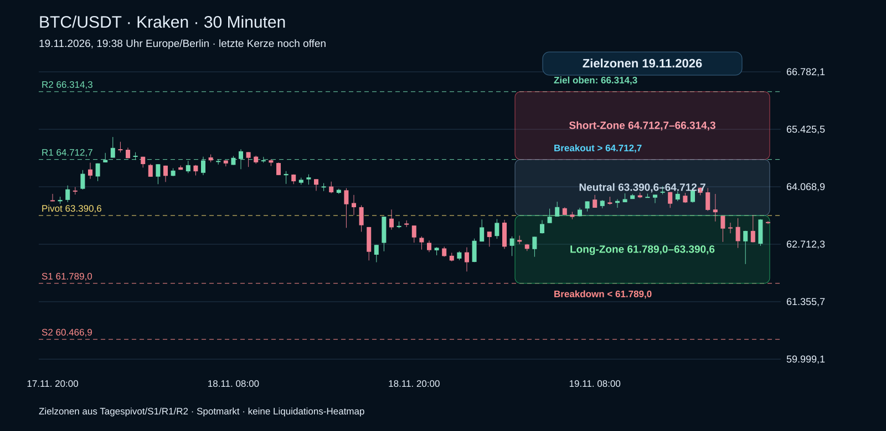
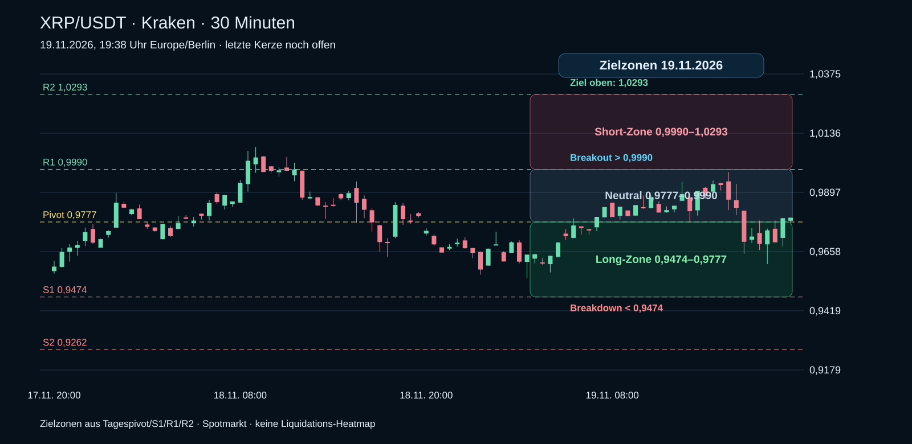

Tagesstand 19.11.2026, 19:38 Uhr
Aktuelle Kraken-Spotkurse und echte 30-Minuten-Kerzen. Technische Marken aus dem abgeschlossenen Vortag. Historische Heatmaps weiter unten · Datenstand 03.10.2026.
BTC/USDT · 63.233,6
+0,19 % zum Vortagsschluss
Tagesbereich (UTC): 62.244,8–64.082,6
Unter SMA20 (72.796,8); unter Tagespivot 63.390,6
Support: S1 61.789,0 / S2 60.466,9
Widerstand: R1 64.712,7 / R2 66.314,3
XRP/USDT · 0,9795
+1,11 % zum Vortagsschluss
Tagesbereich (UTC): 0,9551–0,9979
Unter SMA20 (1,1155); über Tagespivot 0,9777
Support: S1 0,9474 / S2 0,9262
Widerstand: R1 0,9990 / R2 1,0293
BTC · aktuelle Zielzonen · 30-Minuten-Chart
Kraken Spot · echte Kerzen · Long-/Neutral-/Short-Zonen und Pivot-Marken aus dem UTC-Vortag

XRP · aktuelle Zielzonen · 30-Minuten-Chart
Kraken Spot · echte Kerzen · Long-/Neutral-/Short-Zonen und Pivot-Marken aus dem UTC-Vortag

Excel / Journal
BTC und XRP im täglichen Vergleich. Alle Kursmarken in USDT.
Downloads: Tagesübersicht 19.11.2026. Filter verändern nur die Tabellenansicht.
Tagesdaten & Historie
90 Einträge
| Datum | Coin | Kurs (USDT) | Trend | Support | Widerstand | Long-Zone | Short-Zone | Breakout | Breakdown | Ziele | Heatmap-Cluster | Heatmap-Dominanz | Veränderung zum Vortag |
|---|---|---|---|---|---|---|---|---|---|---|---|---|---|
| 19.11.2026 | XRP | 0,9795 | Unter SMA20 (1,1155); über Tagespivot 0,9777 | S1 0,9474 / S2 0,9262 | R1 0,9990 / R2 1,0293 | 0,9474–0,9777 (Pivot-Rücklauf; Bestätigung abwarten) | 0,9990–1,0293 (nur bei Ablehnung) | > 0,999 | < 0,9474 | Oberseite R1/R2: 0,9990 / 1,0293; Unterseite S1/S2: 0,9474 / 0,9262 | Keine aktuelle Liquidationsquelle; alte Heatmap: 03.10.2026 | Nicht verfügbar | +1,11 % |
| 19.11.2026 | BTC | 63.233,6 | Unter SMA20 (72.796,8); unter Tagespivot 63.390,6 | S1 61.789,0 / S2 60.466,9 | R1 64.712,7 / R2 66.314,3 | 61.789,0–63.390,6 (Pivot-Rücklauf; Bestätigung abwarten) | 64.712,7–66.314,3 (nur bei Ablehnung) | > 64.712,7 | < 61.789,0 | Oberseite R1/R2: 64.712,7 / 66.314,3; Unterseite S1/S2: 61.789,0 / 60.466,9 | Keine aktuelle Liquidationsquelle; alte Heatmap: 03.10.2026 | Nicht verfügbar | +0,19 % |
| 18.11.2026 | XRP | 0,9801 | Unter SMA20 (1,1290); über Tagespivot 0,9732 | S1 0,9569 / S2 0,9302 | R1 0,9999 / R2 1,0162 | 0,9569–0,9732 (Pivot-Rücklauf; Bestätigung abwarten) | 0,9999–1,0162 (nur bei Ablehnung) | > 0,9999 | < 0,9569 | Oberseite R1/R2: 0,9999 / 1,0162; Unterseite S1/S2: 0,9569 / 0,9302 | Keine aktuelle Liquidationsquelle; alte Heatmap: 03.10.2026 | Nicht verfügbar | -0,35 % |
| 18.11.2026 | BTC | 63.137,2 | Unter SMA20 (73.539,9); unter Tagespivot 64.580,4; S1 bereits unterschritten, über S2 | S1 63.720,2 / S2 62.490,9 (berechnet; S1 unterschritten, S2 darunter) | R1 65.809,7 / R2 66.669,9 | 63.720,2–64.580,4 (nur nach Rückeroberung von S1; derzeit darunter) | 65.809,7–66.669,9 (nur bei Ablehnung) | > 65.809,7 | < 63.720,2 | Abwärtsszenario S2: 62.490,9; Rückeroberung S1/Pivot: 63.720,2 / 64.580,4; danach R1/R2: 65.809,7 / 66.669,9 | Keine aktuelle Liquidationsquelle; alte Heatmap: 03.10.2026 | Nicht verfügbar | -2,79 % |
| 17.11.2026 | XRP | 0,9735 | Höheres Hoch / höheres Tief | S1 0,93950 / S2 0,92370 | R1 0,97400 / R2 0,99270 | 0,93950–0,95820 | 0,97400–0,99270 | > 0,974 | < 0,9395 | Long R1/R2 0,97400 / 0,99270; Short Pivot/S1 0,95820 / 0,93950 | Keine Heatmap | Nicht verfügbar | +1,91 % |
| 17.11.2026 | BTC | 65.006,0 | Höheres Hoch / höheres Tief | S1 63.959,87 / S2 63.036,86 | R1 65.751,02 / R2 66.619,16 | 63.959,87–64.828,01 | 65.751,02–66.619,16 | > 65.751,0 | < 63.959,9 | Long R1/R2 65.751,02 / 66.619,16; Short Pivot/S1 64.828,01 / 63.959,87 | Keine Heatmap | Nicht verfügbar | +0,19 % |
| 16.11.2026 | XRP | 0,9437 | Höheres Hoch / höheres Tief | S1 0,92247 / S2 0,87073 | R1 1,00267 / R2 1,03113 | 0,92247–0,95093 | 1,00267–1,03113 | > 1,0027 | < 0,9225 | Long R1/R2 1,00267 / 1,03113; Short Pivot/S1 0,95093 / 0,92247 | Keine Heatmap | Nicht verfügbar | -3,13 % |
| 16.11.2026 | BTC | 64.184,9 | Seitwärts / gemischte Struktur | S1 62.860,70 / S2 60.370,34 | R1 66.986,71 / R2 68.622,36 | 62.860,70–64.496,35 | 66.986,71–68.622,36 | > 66.986,7 | < 62.860,7 | Long R1/R2 66.986,71 / 68.622,36; Short Pivot/S1 64.496,35 / 62.860,70 | Keine Heatmap | Nicht verfügbar | -1,78 % |
| 15.11.2026 | XRP | 0,9557 | Höheres Hoch / höheres Tief | S1 0,86700 / S2 0,81960 | R1 0,98780 / R2 1,06120 | 0,86700–0,94040 | 0,98780–1,06120 | > 0,9878 | < 0,867 | Long R1/R2 0,98780 / 1,06120; Short Pivot/S1 0,94040 / 0,86700 | Keine Heatmap | Nicht verfügbar | +4,52 % |
| 15.11.2026 | BTC | 64.733,3 | Seitwärts / gemischte Struktur | S1 62.164,60 / S2 60.179,19 | R1 67.290,81 / R2 70.431,61 | 62.164,60–65.305,40 | 67.290,81–70.431,61 | > 67.290,8 | < 62.164,6 | Long R1/R2 67.290,81 / 70.431,61; Short Pivot/S1 65.305,40 / 62.164,60 | Keine Heatmap | Nicht verfügbar | +0,91 % |
| 14.11.2026 | XRP | 0,9811 | Seitwärts / gemischte Struktur | S1 0,99103 / S2 0,97107 | R1 1,03743 / R2 1,06387 | 0,99103–1,01747 | 1,03743–1,06387 | > 1,0374 | < 0,991 | Long R1/R2 1,03743 / 1,06387; Short Pivot/S1 1,01747 / 0,99103 | Keine Heatmap | Nicht verfügbar | -2,96 % |
| 14.11.2026 | BTC | 65.892,1 | Tieferes Hoch / tieferes Tief | S1 66.750,00 / S2 65.185,99 | R1 70.696,01 / R2 73.078,01 | 66.750,00–69.132,00 | 70.696,01–73.078,01 | > 70.696,0 | < 66.750,0 | Long R1/R2 70.696,01 / 73.078,01; Short Pivot/S1 69.132,00 / 66.750,00 | Keine Heatmap | Nicht verfügbar | -3,55 % |
| 13.11.2026 | XRP | 1,0303 | Seitwärts / gemischte Struktur | S1 1,01810 / S2 0,99490 | R1 1,06280 / R2 1,08430 | 1,01810–1,03960 | 1,06280–1,08430 | > 1,0628 | < 1,0181 | Long R1/R2 1,06280 / 1,08430; Short Pivot/S1 1,03960 / 1,01810 | Keine Heatmap | Nicht verfügbar | -1,06 % |
| 13.11.2026 | BTC | 68.839,2 | Höheres Hoch / höheres Tief | S1 70.309,54 / S2 69.159,09 | R1 73.413,97 / R2 75.367,95 | 70.309,54–72.263,52 | 73.413,97–75.367,95 | > 73.414,0 | < 70.309,5 | Long R1/R2 73.413,97 / 75.367,95; Short Pivot/S1 72.263,52 / 70.309,54 | Keine Heatmap | Nicht verfügbar | -3,67 % |
| 12.11.2026 | XRP | 1,0227 | Tieferes Hoch / tieferes Tief | S1 1,03533 / S2 1,01827 | R1 1,07513 / R2 1,09787 | 1,03533–1,05807 | 1,07513–1,09787 | > 1,0751 | < 1,0353 | Long R1/R2 1,07513 / 1,09787; Short Pivot/S1 1,05807 / 1,03533 | Keine Heatmap | Nicht verfügbar | -2,82 % |
| 12.11.2026 | BTC | 71.414,0 | Tieferes Hoch / tieferes Tief | S1 73.212,39 / S2 72.409,59 | R1 74.814,72 / R2 75.614,25 | 73.212,39–74.011,92 | 74.814,72–75.614,25 | > 74.814,7 | < 73.212,4 | Long R1/R2 74.814,72 / 75.614,25; Short Pivot/S1 74.011,92 / 73.212,39 | Keine Heatmap | Nicht verfügbar | -3,51 % |
| 11.11.2026 | XRP | 1,0705 | Tieferes Hoch / tieferes Tief | S1 1,02297 / S2 0,98943 | R1 1,09817 / R2 1,13983 | 1,02297–1,06463 | 1,09817–1,13983 | > 1,0982 | < 1,023 | Long R1/R2 1,09817 / 1,13983; Short Pivot/S1 1,06463 / 1,02297 | Keine Heatmap | Nicht verfügbar | +1,33 % |
| 11.11.2026 | BTC | 73.932,9 | Tieferes Hoch / tieferes Tief | S1 72.534,88 / S2 71.273,71 | R1 75.249,62 / R2 76.703,19 | 72.534,88–73.988,45 | 75.249,62–76.703,19 | > 75.249,6 | < 72.534,9 | Long R1/R2 75.249,62 / 76.703,19; Short Pivot/S1 73.988,45 / 72.534,88 | Keine Heatmap | Nicht verfügbar | +0,19 % |
| 10.11.2026 | XRP | 1,07 | Tieferes Hoch / tieferes Tief | S1 1,07473 / S2 1,05057 | R1 1,12473 / R2 1,15057 | 1,07473–1,10057 | 1,12473–1,15057 | > 1,1247 | < 1,0747 | Long R1/R2 1,12473 / 1,15057; Short Pivot/S1 1,10057 / 1,07473 | Keine Heatmap | Nicht verfügbar | -2,63 % |
| 10.11.2026 | BTC | 74.567,8 | Tieferes Hoch / tieferes Tief | S1 74.212,53 / S2 73.056,66 | R1 76.061,75 / R2 76.755,10 | 74.212,53–74.905,88 | 76.061,75–76.755,10 | > 76.061,8 | < 74.212,5 | Long R1/R2 76.061,75 / 76.755,10; Short Pivot/S1 74.905,88 / 74.212,53 | Keine Heatmap | Nicht verfügbar | -1,06 % |
| 09.11.2026 | XRP | 1,1009 | Seitwärts / gemischte Struktur | S1 1,08083 / S2 1,04847 | R1 1,15773 / R2 1,20227 | 1,08083–1,12537 | 1,15773–1,20227 | > 1,1577 | < 1,0808 | Long R1/R2 1,15773 / 1,20227; Short Pivot/S1 1,12537 / 1,08083 | Keine Heatmap | Nicht verfügbar | -1,10 % |
| 09.11.2026 | BTC | 75.016,0 | Höheres Hoch / höheres Tief | S1 73.507,63 / S2 72.163,81 | R1 76.197,63 / R2 77.543,81 | 73.507,63–74.853,81 | 76.197,63–77.543,81 | > 76.197,6 | < 73.507,6 | Long R1/R2 76.197,63 / 77.543,81; Short Pivot/S1 74.853,81 / 73.507,63 | Keine Heatmap | Nicht verfügbar | +0,22 % |
| 08.11.2026 | XRP | 1,1607 | Seitwärts / gemischte Struktur | S1 1,14843 / S2 1,13287 | R1 1,18113 / R2 1,19827 | 1,14843–1,16557 | 1,18113–1,19827 | > 1,1811 | < 1,1484 | Long R1/R2 1,18113 / 1,19827; Short Pivot/S1 1,16557 / 1,14843 | Keine Heatmap | Nicht verfügbar | -0,28 % |
| 08.11.2026 | BTC | 76.068,6 | Höheres Hoch / höheres Tief | S1 75.542,45 / S2 75.217,31 | R1 76.221,36 / R2 76.575,13 | 75.542,45–75.896,22 | 76.221,36–76.575,13 | > 76.221,4 | < 75.542,4 | Long R1/R2 76.221,36 / 76.575,13; Short Pivot/S1 75.896,22 / 75.542,45 | Keine Heatmap | Nicht verfügbar | +0,26 % |
| 07.11.2026 | XRP | 1,1674 | Tieferes Hoch / tieferes Tief | S1 1,15973 / S2 1,14047 | R1 1,21083 / R2 1,24267 | 1,15973–1,19157 | 1,21083–1,24267 | > 1,2108 | < 1,1597 | Long R1/R2 1,21083 / 1,24267; Short Pivot/S1 1,19157 / 1,15973 | Keine Heatmap | Nicht verfügbar | -0,98 % |
| 07.11.2026 | BTC | 75.930,0 | Tieferes Hoch / tieferes Tief | S1 75.015,92 / S2 74.187,84 | R1 76.544,16 / R2 77.244,32 | 75.015,92–75.716,08 | 76.544,16–77.244,32 | > 76.544,2 | < 75.015,9 | Long R1/R2 76.544,16 / 77.244,32; Short Pivot/S1 75.716,08 / 75.015,92 | Keine Heatmap | Nicht verfügbar | +0,11 % |
| 06.11.2026 | XRP | 1,1795 | Seitwärts / gemischte Struktur | S1 1,16243 / S2 1,11767 | R1 1,28953 / R2 1,37187 | 1,16243–1,24477 | 1,28953–1,37187 | > 1,2895 | < 1,1624 | Long R1/R2 1,28953 / 1,37187; Short Pivot/S1 1,24477 / 1,16243 | Keine Heatmap | Nicht verfügbar | -2,29 % |
| 06.11.2026 | BTC | 75.257,7 | Höheres Hoch / höheres Tief | S1 73.891,62 / S2 71.695,22 | R1 79.601,21 / R2 83.114,40 | 73.891,62–77.404,81 | 79.601,21–83.114,40 | > 79.601,2 | < 73.891,6 | Long R1/R2 79.601,21 / 83.114,40; Short Pivot/S1 77.404,81 / 73.891,62 | Keine Heatmap | Nicht verfügbar | -1,09 % |
| 05.11.2026 | XRP | 1,2765 | Tieferes Hoch / tieferes Tief | S1 1,25100 / S2 1,19680 | R1 1,35040 / R2 1,39560 | 1,25100–1,29620 | 1,35040–1,39560 | > 1,3504 | < 1,251 | Long R1/R2 1,35040 / 1,39560; Short Pivot/S1 1,29620 / 1,25100 | Keine Heatmap | Nicht verfügbar | -2,20 % |
| 05.11.2026 | BTC | 77.825,7 | Tieferes Hoch / tieferes Tief | S1 77.094,92 / S2 73.685,84 | R1 82.554,55 / R2 84.605,10 | 77.094,92–79.145,47 | 82.554,55–84.605,10 | > 82.554,6 | < 77.094,9 | Long R1/R2 82.554,55 / 84.605,10; Short Pivot/S1 79.145,47 / 77.094,92 | Keine Heatmap | Nicht verfügbar | -3,33 % |
| 04.11.2026 | XRP | 1,3149 | Höheres Hoch / höheres Tief | S1 1,25087 / S2 1,22503 | R1 1,29697 / R2 1,31723 | 1,25087–1,27113 | 1,29697–1,31723 | > 1,297 | < 1,2509 | Long R1/R2 1,29697 / 1,31723; Short Pivot/S1 1,27113 / 1,25087 | Keine Heatmap | Nicht verfügbar | +2,99 % |
| 04.11.2026 | BTC | 79.372,1 | Höheres Hoch / höheres Tief | S1 76.540,73 / S2 75.627,59 | R1 78.215,15 / R2 78.976,43 | 76.540,73–77.302,01 | 78.215,15–78.976,43 | > 78.215,1 | < 76.540,7 | Long R1/R2 78.215,15 / 78.976,43; Short Pivot/S1 77.302,01 / 76.540,73 | Keine Heatmap | Nicht verfügbar | +2,48 % |
| 03.11.2026 | XRP | 1,2796 | Höheres Hoch / höheres Tief | S1 1,23560 / S2 1,22100 | R1 1,26470 / R2 1,27920 | 1,23560–1,25010 | 1,26470–1,27920 | > 1,2647 | < 1,2356 | Long R1/R2 1,26470 / 1,27920; Short Pivot/S1 1,25010 / 1,23560 | Keine Heatmap | Nicht verfügbar | +2,35 % |
| 03.11.2026 | BTC | 77.624,0 | Höheres Hoch / höheres Tief | S1 76.054,66 / S2 75.293,33 | R1 78.227,67 / R2 79.639,35 | 76.054,66–77.466,34 | 78.227,67–79.639,35 | > 78.227,7 | < 76.054,7 | Long R1/R2 78.227,67 / 79.639,35; Short Pivot/S1 77.466,34 / 76.054,66 | Keine Heatmap | Nicht verfügbar | +1,05 % |
| 02.11.2026 | XRP | 1,2561 | Seitwärts / gemischte Struktur | S1 1,24240 / S2 1,23410 | R1 1,25950 / R2 1,26830 | 1,24240–1,25120 | 1,25950–1,26830 | > 1,2595 | < 1,2424 | Long R1/R2 1,25950 / 1,26830; Short Pivot/S1 1,25120 / 1,24240 | Keine Heatmap | Nicht verfügbar | +0,43 % |
| 02.11.2026 | BTC | 78.028,0 | Tieferes Hoch / tieferes Tief | S1 77.773,39 / S2 77.192,78 | R1 78.678,42 / R2 79.002,84 | 77.773,39–78.097,81 | 78.678,42–79.002,84 | > 78.678,4 | < 77.773,4 | Long R1/R2 78.678,42 / 79.002,84; Short Pivot/S1 78.097,81 / 77.773,39 | Keine Heatmap | Nicht verfügbar | -0,42 % |
| 01.11.2026 | XRP | 1,2531 | Tieferes Hoch / tieferes Tief | S1 1,24210 / S2 1,23230 | R1 1,26200 / R2 1,27210 | 1,24210–1,25220 | 1,26200–1,27210 | > 1,262 | < 1,2421 | Long R1/R2 1,26200 / 1,27210; Short Pivot/S1 1,25220 / 1,24210 | Keine Heatmap | Nicht verfügbar | +0,10 % |
| 01.11.2026 | BTC | 78.055,8 | Tieferes Hoch / tieferes Tief | S1 77.198,68 / S2 76.815,35 | R1 77.880,68 / R2 78.179,35 | 77.198,68–77.497,35 | 77.880,68–78.179,35 | > 77.880,7 | < 77.198,7 | Long R1/R2 77.880,68 / 78.179,35; Short Pivot/S1 77.497,35 / 77.198,68 | Keine Heatmap | Nicht verfügbar | +0,61 % |
| 31.10.2026 | XRP | 1,2502 | Höheres Hoch / höheres Tief | S1 1,21330 / S2 1,16990 | R1 1,28700 / R2 1,31730 | 1,21330–1,24360 | 1,28700–1,31730 | > 1,287 | < 1,2133 | Long R1/R2 1,28700 / 1,31730; Short Pivot/S1 1,24360 / 1,21330 | Keine Heatmap | Nicht verfügbar | -0,52 % |
| 31.10.2026 | BTC | 77.472,6 | Höheres Hoch / höheres Tief | S1 76.195,16 / S2 75.021,56 | R1 78.673,19 / R2 79.977,62 | 76.195,16–77.499,59 | 78.673,19–79.977,62 | > 78.673,2 | < 76.195,2 | Long R1/R2 78.673,19 / 79.977,62; Short Pivot/S1 77.499,59 / 76.195,16 | Keine Heatmap | Nicht verfügbar | +0,13 % |
| 30.10.2026 | XRP | 1,2457 | Tieferes Hoch / tieferes Tief | S1 1,19837 / S2 1,15903 | R1 1,30197 / R2 1,36623 | 1,19837–1,26263 | 1,30197–1,36623 | > 1,302 | < 1,1984 | Long R1/R2 1,30197 / 1,36623; Short Pivot/S1 1,26263 / 1,19837 | Keine Heatmap | Nicht verfügbar | +0,65 % |
| 30.10.2026 | BTC | 77.316,0 | Tieferes Hoch / tieferes Tief | S1 76.610,93 / S2 75.229,96 | R1 80.671,93 / R2 83.351,96 | 76.610,93–79.290,96 | 80.671,93–83.351,96 | > 80.671,9 | < 76.610,9 | Long R1/R2 80.671,93 / 83.351,96; Short Pivot/S1 79.290,96 / 76.610,93 | Keine Heatmap | Nicht verfügbar | -0,87 % |
| 29.10.2026 | XRP | 1,3037 | Seitwärts / gemischte Struktur | S1 1,30773 / S2 1,28947 | R1 1,34433 / R2 1,36267 | 1,30773–1,32607 | 1,34433–1,36267 | > 1,3443 | < 1,3077 | Long R1/R2 1,34433 / 1,36267; Short Pivot/S1 1,32607 / 1,30773 | Keine Heatmap | Nicht verfügbar | -1,68 % |
| 29.10.2026 | BTC | 81.290,7 | Höheres Hoch / höheres Tief | S1 80.552,76 / S2 79.762,02 | R1 81.978,62 / R2 82.613,74 | 80.552,76–81.187,88 | 81.978,62–82.613,74 | > 81.978,6 | < 80.552,8 | Long R1/R2 81.978,62 / 82.613,74; Short Pivot/S1 81.187,88 / 80.552,76 | Keine Heatmap | Nicht verfügbar | -0,06 % |
| 28.10.2026 | XRP | 1,3155 | Tieferes Hoch / tieferes Tief | S1 1,30333 / S2 1,27537 | R1 1,34693 / R2 1,36257 | 1,30333–1,31897 | 1,34693–1,36257 | > 1,3469 | < 1,3033 | Long R1/R2 1,34693 / 1,36257; Short Pivot/S1 1,31897 / 1,30333 | Keine Heatmap | Nicht verfügbar | -1,19 % |
| 28.10.2026 | BTC | 80.663,8 | Tieferes Hoch / tieferes Tief | S1 79.843,85 / S2 78.777,92 | R1 81.637,85 / R2 82.365,92 | 79.843,85–80.571,92 | 81.637,85–82.365,92 | > 81.637,8 | < 79.843,8 | Long R1/R2 81.637,85 / 82.365,92; Short Pivot/S1 80.571,92 / 79.843,85 | Keine Heatmap | Nicht verfügbar | -0,30 % |
| 27.10.2026 | XRP | 1,3185 | Höheres Hoch / höheres Tief | S1 1,28427 / S2 1,25933 | R1 1,32317 / R2 1,33713 | 1,28427–1,29823 | 1,32317–1,33713 | > 1,3232 | < 1,2843 | Long R1/R2 1,32317 / 1,33713; Short Pivot/S1 1,29823 / 1,28427 | Keine Heatmap | Nicht verfügbar | +0,71 % |
| 27.10.2026 | BTC | 80.436,0 | Höheres Hoch / höheres Tief | S1 79.397,92 / S2 78.645,28 | R1 80.873,95 / R2 81.597,34 | 79.397,92–80.121,31 | 80.873,95–81.597,34 | > 80.873,9 | < 79.397,9 | Long R1/R2 80.873,95 / 81.597,34; Short Pivot/S1 80.121,31 / 79.397,92 | Keine Heatmap | Nicht verfügbar | +0,36 % |
| 26.10.2026 | XRP | 1,3032 | Höheres Hoch / höheres Tief | S1 1,28230 / S2 1,26840 | R1 1,31300 / R2 1,32980 | 1,28230–1,29910 | 1,31300–1,32980 | > 1,313 | < 1,2823 | Long R1/R2 1,31300 / 1,32980; Short Pivot/S1 1,29910 / 1,28230 | Keine Heatmap | Nicht verfügbar | +0,54 % |
| 26.10.2026 | BTC | 80.424,2 | Tieferes Hoch / tieferes Tief | S1 79.655,40 / S2 79.156,72 | R1 80.843,23 / R2 81.532,38 | 79.655,40–80.344,55 | 80.843,23–81.532,38 | > 80.843,2 | < 79.655,4 | Long R1/R2 80.843,23 / 81.532,38; Short Pivot/S1 80.344,55 / 79.655,40 | Keine Heatmap | Nicht verfügbar | +0,34 % |
| 25.10.2026 | XRP | 1,2914 | Unter SMA20 (1,3606); über Tagespivot 1,2856 | S1 1,2693 / S2 1,2387 | R1 1,3162 / R2 1,3324 | 1,2693–1,2856 (Pivot-Rücklauf; Bestätigung abwarten) | 1,3162–1,3324 (nur bei Ablehnung) | > 1,3162 | < 1,2693 | Oberseite R1/R2: 1,3162 / 1,3324; Unterseite S1/S2: 1,2693 / 1,2387 | Keine aktuelle Liquidationsquelle; alte Heatmap: 03.10.2026 | Nicht verfügbar | -0,66 % |
| 25.10.2026 | BTC | 80.234,0 | Unter SMA20 (82.622,8); unter Tagespivot 80.440,0 | S1 79.680,9 / S2 78.482,0 | R1 81.638,9 / R2 82.398,0 | 79.680,9–80.440,0 (Pivot-Rücklauf; Bestätigung abwarten) | 81.638,9–82.398,0 (nur bei Ablehnung) | > 81.638,9 | < 79.680,9 | Oberseite R1/R2: 81.638,9 / 82.398,0; Unterseite S1/S2: 79.680,9 / 78.482,0 | Keine aktuelle Liquidationsquelle; alte Heatmap: 03.10.2026 | Nicht verfügbar | -0,80 % |
| 24.10.2026 | XRP | 1,2855 | Unter SMA20 (1,3716); unter Tagespivot 1,3027 | S1 1,2749 / S2 1,2546 | R1 1,3230 / R2 1,3508 | 1,2749–1,3027 (Pivot-Rücklauf; Bestätigung abwarten) | 1,3230–1,3508 (nur bei Ablehnung) | > 1,323 | < 1,2749 | Oberseite R1/R2: 1,3230 / 1,3508; Unterseite S1/S2: 1,2749 / 1,2546 | Keine aktuelle Liquidationsquelle; alte Heatmap: 03.10.2026 | Nicht verfügbar | -0,74 % |
| 24.10.2026 | BTC | 80.758,7 | Unter SMA20 (82.905,4); unter Tagespivot 81.245,0 | S1 80.446,5 / S2 79.720,9 | R1 81.970,6 / R2 82.769,1 | 80.446,5–81.245,0 (Pivot-Rücklauf; Bestätigung abwarten) | 81.970,6–82.769,1 (nur bei Ablehnung) | > 81.970,6 | < 80.446,5 | Oberseite R1/R2: 81.970,6 / 82.769,1; Unterseite S1/S2: 80.446,5 / 79.720,9 | Keine aktuelle Liquidationsquelle; alte Heatmap: 03.10.2026 | Nicht verfügbar | -0,51 % |
| 22.10.2026 | XRP | 1,3298 | Unter SMA20 (1,3899); unter Tagespivot 1,3653; S1 bereits unterschritten, über S2 | S1 1,3318 / S2 1,2982 (berechnet; S1 unterschritten, S2 darunter) | R1 1,3989 / R2 1,4325 | 1,3318–1,3653 (nur nach Rückeroberung von S1; derzeit darunter) | 1,3989–1,4325 (nur bei Ablehnung) | > 1,3989 | < 1,3318 | Abwärtsszenario S2: 1,2982; Rückeroberung S1/Pivot: 1,3318 / 1,3653; danach R1/R2: 1,3989 / 1,4325 | Keine aktuelle Liquidationsquelle; alte Heatmap: 03.10.2026 | Nicht verfügbar | -2,61 % |
| 22.10.2026 | BTC | 81.871,0 | Unter SMA20 (83.239,7); unter Tagespivot 83.881,9; S1 bereits unterschritten, über S2 | S1 82.864,0 / S2 81.637,0 (berechnet; S1 unterschritten, S2 darunter) | R1 85.108,9 / R2 86.126,8 | 82.864,0–83.881,9 (nur nach Rückeroberung von S1; derzeit darunter) | 85.108,9–86.126,8 (nur bei Ablehnung) | > 85.108,9 | < 82.864,0 | Abwärtsszenario S2: 81.637,0; Rückeroberung S1/Pivot: 82.864,0 / 83.881,9; danach R1/R2: 85.108,9 / 86.126,8 | Keine aktuelle Liquidationsquelle; alte Heatmap: 03.10.2026 | Nicht verfügbar | -2,64 % |
| 21.10.2026 | XRP | 1,3504 | Unter SMA20 (1,3964); über Tagespivot 1,3228 | S1 1,2995 / S2 1,2634 | R1 1,3589 / R2 1,3821 | 1,2995–1,3228 (Pivot-Rücklauf; Bestätigung abwarten) | 1,3589–1,3821 (nur bei Ablehnung) | > 1,3589 | < 1,2995 | Oberseite R1/R2: 1,3589 / 1,3821; Unterseite S1/S2: 1,2995 / 1,2634 | Keine aktuelle Liquidationsquelle; alte Heatmap: 03.10.2026 | Nicht verfügbar | +1,11 % |
| 21.10.2026 | BTC | 83.326,9 | Über SMA20 (83.279,1); über Tagespivot 82.547,8 | S1 81.676,9 / S2 80.329,0 | R1 83.895,7 / R2 84.766,6 | 81.676,9–82.547,8 (Pivot-Rücklauf; Bestätigung abwarten) | 83.895,7–84.766,6 (nur bei Ablehnung) | > 83.895,7 | < 81.676,9 | Oberseite R1/R2: 83.895,7 / 84.766,6; Unterseite S1/S2: 81.676,9 / 80.329,0 | Keine aktuelle Liquidationsquelle; alte Heatmap: 03.10.2026 | Nicht verfügbar | +0,36 % |
| 20.10.2026 | XRP | 1,2954 | Unter SMA20 (1,4040); unter Tagespivot 1,3066 | S1 1,2914 / S2 1,2787 | R1 1,3193 / R2 1,3345 | 1,2914–1,3066 (Pivot-Rücklauf; Bestätigung abwarten) | 1,3193–1,3345 (nur bei Ablehnung) | > 1,3193 | < 1,2914 | Oberseite R1/R2: 1,3193 / 1,3345; Unterseite S1/S2: 1,2914 / 1,2787 | Keine aktuelle Liquidationsquelle; alte Heatmap: 03.10.2026 | Nicht verfügbar | -0,66 % |
| 20.10.2026 | BTC | 81.487,2 | Unter SMA20 (83.307,8); unter Tagespivot 82.289,9 | S1 81.416,3 / S2 80.884,6 | R1 82.821,6 / R2 83.695,2 | 81.416,3–82.289,9 (Pivot-Rücklauf; Bestätigung abwarten) | 82.821,6–83.695,2 (nur bei Ablehnung) | > 82.821,6 | < 81.416,3 | Oberseite R1/R2: 82.821,6 / 83.695,2; Unterseite S1/S2: 81.416,3 / 80.884,6 | Keine aktuelle Liquidationsquelle; alte Heatmap: 03.10.2026 | Nicht verfügbar | -0,56 % |
| 17.10.2026 | XRP | 1,3075 | Unter SMA20 (1,4340); unter Tagespivot 1,3182 | S1 1,2833 / S2 1,2546 | R1 1,3469 / R2 1,3818 | 1,2833–1,3182 (Pivot-Rücklauf; Bestätigung abwarten) | 1,3469–1,3818 (nur bei Ablehnung) | > 1,3469 | < 1,2833 | Oberseite R1/R2: 1,3469 / 1,3818; Unterseite S1/S2: 1,2833 / 1,2546 | Keine aktuelle Liquidationsquelle; alte Heatmap: 03.10.2026 | Nicht verfügbar | -0,34 % |
| 17.10.2026 | BTC | 81.680,2 | Unter SMA20 (83.614,1); unter Tagespivot 81.778,5 | S1 80.631,0 / S2 79.659,7 | R1 82.749,8 / R2 83.897,3 | 80.631,0–81.778,5 (Pivot-Rücklauf; Bestätigung abwarten) | 82.749,8–83.897,3 (nur bei Ablehnung) | > 82.749,8 | < 80.631,0 | Oberseite R1/R2: 82.749,8 / 83.897,3; Unterseite S1/S2: 80.631,0 / 79.659,7 | Keine aktuelle Liquidationsquelle; alte Heatmap: 03.10.2026 | Nicht verfügbar | +0,10 % |
| 16.10.2026 | XRP | Nicht verfügbar | Kein Tages-Snapshot erfasst | Nicht verfügbar | Nicht verfügbar | Nicht verfügbar | Nicht verfügbar | Nicht verfügbar | Nicht verfügbar | Nicht verfügbar | Nicht verfügbar | Nicht verfügbar | Nicht verfügbar |
| 16.10.2026 | BTC | Nicht verfügbar | Kein Tages-Snapshot erfasst | Nicht verfügbar | Nicht verfügbar | Nicht verfügbar | Nicht verfügbar | Nicht verfügbar | Nicht verfügbar | Nicht verfügbar | Nicht verfügbar | Nicht verfügbar | Nicht verfügbar |
| 15.10.2026 | XRP | 1,3136 | Unter SMA20 (1,4565); unter Tagespivot 1,3453 | S1 1,3062 / S2 1,2807 | R1 1,3708 / R2 1,4099 | 1,3062–1,3453 (Pivot-Rücklauf; Bestätigung abwarten) | 1,3708–1,4099 (nur bei Ablehnung) | > 1,3708 | < 1,3062 | Oberseite R1/R2: 1,3708 / 1,4099; Unterseite S1/S2: 1,3062 / 1,2807 | Keine aktuelle Liquidationsquelle; alte Heatmap: 03.10.2026 | Nicht verfügbar | -1,36 % |
| 15.10.2026 | BTC | 81.556,4 | Unter SMA20 (83.849,8); unter Tagespivot 82.411,7 | S1 80.702,1 / S2 79.740,4 | R1 83.373,4 / R2 85.083,0 | 80.702,1–82.411,7 (Pivot-Rücklauf; Bestätigung abwarten) | 83.373,4–85.083,0 (nur bei Ablehnung) | > 83.373,4 | < 80.702,1 | Oberseite R1/R2: 83.373,4 / 85.083,0; Unterseite S1/S2: 80.702,1 / 79.740,4 | Keine aktuelle Liquidationsquelle; alte Heatmap: 03.10.2026 | Nicht verfügbar | -0,13 % |
| 14.10.2026 | XRP | 1,3744 | Unter SMA20 (1,4666); über Tagespivot 1,3533 | S1 1,3248 / S2 1,2831 | R1 1,3951 / R2 1,4236 | 1,3248–1,3533 (Pivot-Rücklauf; Bestätigung abwarten) | 1,3951–1,4236 (nur bei Ablehnung) | > 1,3951 | < 1,3248 | Oberseite R1/R2: 1,3951 / 1,4236; Unterseite S1/S2: 1,3248 / 1,2831 | Keine aktuelle Liquidationsquelle; alte Heatmap: 03.10.2026 | Nicht verfügbar | +0,57 % |
| 14.10.2026 | BTC | 83.636,3 | Unter SMA20 (83.986,8); über Tagespivot 82.792,1 | S1 81.432,6 / S2 79.695,7 | R1 84.529,0 / R2 85.888,5 | 81.432,6–82.792,1 (Pivot-Rücklauf; Bestätigung abwarten) | 84.529,0–85.888,5 (nur bei Ablehnung) | > 84.529,0 | < 81.432,6 | Oberseite R1/R2: 84.529,0 / 85.888,5; Unterseite S1/S2: 81.432,6 / 79.695,7 | Keine aktuelle Liquidationsquelle; alte Heatmap: 03.10.2026 | Nicht verfügbar | +0,56 % |
| 13.10.2026 | XRP | 1,373 | Unter SMA20 (1,4734); über Tagespivot 1,3668 | S1 1,3123 / S2 1,2838 | R1 1,3954 / R2 1,4498 | 1,3123–1,3668 (Pivot-Rücklauf; Bestätigung abwarten) | 1,3954–1,4498 (nur bei Ablehnung) | > 1,3954 | < 1,3123 | Oberseite R1/R2: 1,3954 / 1,4498; Unterseite S1/S2: 1,3123 / 1,2838 | Keine aktuelle Liquidationsquelle; alte Heatmap: 03.10.2026 | Nicht verfügbar | +2,39 % |
| 13.10.2026 | BTC | 83.493,6 | Unter SMA20 (84.048,4); über Tagespivot 82.665,3 | S1 80.982,2 / S2 80.092,4 | R1 83.555,1 / R2 85.238,2 | 80.982,2–82.665,3 (Pivot-Rücklauf; Bestätigung abwarten) | 83.555,1–85.238,2 (nur bei Ablehnung) | > 83.555,1 | < 80.982,2 | Oberseite R1/R2: 83.555,1 / 85.238,2; Unterseite S1/S2: 80.982,2 / 80.092,4 | Keine aktuelle Liquidationsquelle; alte Heatmap: 03.10.2026 | Nicht verfügbar | +1,98 % |
| 12.10.2026 | XRP | 1,3599 | Unter SMA20 (1,4849); unter Tagespivot 1,4083; S1 und S2 bereits unterschritten | S1 1,3901 / S2 1,3697 (berechnet, bereits unterschritten; kein neuer Support bestätigt) | R1 1,4287 / R2 1,4468 | 1,3901–1,4083 (nur nach Rückeroberung von S1; derzeit darunter) | 1,4287–1,4468 (nur bei Ablehnung) | > 1,4287 | < 1,3901 | Rückeroberung: S2/S1 1,3697 / 1,3901; danach R1/R2 1,4287 / 1,4468; weitere Abwärtsziele nicht bestätigt | Keine aktuelle Liquidationsquelle; alte Heatmap: 03.10.2026 | Nicht verfügbar | -3,59 % |
| 12.10.2026 | BTC | 82.532,6 | Unter SMA20 (84.263,8); unter Tagespivot 83.590,5; S1 bereits unterschritten, über S2 | S1 82.984,3 / S2 82.203,8 (berechnet; S1 unterschritten, S2 darunter) | R1 84.371,0 / R2 84.977,2 | 82.984,3–83.590,5 (nur nach Rückeroberung von S1; derzeit darunter) | 84.371,0–84.977,2 (nur bei Ablehnung) | > 84.371,0 | < 82.984,3 | Abwärtsszenario S2: 82.203,8; Rückeroberung S1/Pivot: 82.984,3 / 83.590,5; danach R1/R2: 84.371,0 / 84.977,2 | Keine aktuelle Liquidationsquelle; alte Heatmap: 03.10.2026 | Nicht verfügbar | -1,47 % |
| 11.10.2026 | XRP | 1,3927 | Unter SMA20 (1,4912); unter Tagespivot 1,4036; S1 bereits unterschritten, über S2 | S1 1,3945 / S2 1,3867 (berechnet; S1 unterschritten, S2 darunter) | R1 1,4114 / R2 1,4206 | 1,3945–1,4036 (nur nach Rückeroberung von S1; derzeit darunter) | 1,4114–1,4206 (nur bei Ablehnung) | > 1,4114 | < 1,3945 | Abwärtsszenario S2: 1,3867; Rückeroberung S1/Pivot: 1,3945 / 1,4036; danach R1/R2: 1,4114 / 1,4206 | Keine aktuelle Liquidationsquelle; alte Heatmap: 03.10.2026 | Nicht verfügbar | -0,68 % |
| 11.10.2026 | BTC | 83.034,0 | Unter SMA20 (84.406,8); über Tagespivot 82.897,8 | S1 82.634,6 / S2 82.281,3 | R1 83.251,1 / R2 83.514,3 | 82.634,6–82.897,8 (Pivot-Rücklauf; Bestätigung abwarten) | 83.251,1–83.514,3 (nur bei Ablehnung) | > 83.251,1 | < 82.634,6 | Oberseite R1/R2: 83.251,1 / 83.514,3; Unterseite S1/S2: 82.634,6 / 82.281,3 | Keine aktuelle Liquidationsquelle; alte Heatmap: 03.10.2026 | Nicht verfügbar | +0,06 % |
| 10.10.2026 | XRP | 1,4081 | Unter SMA20 (1,4917); über Tagespivot 1,3924 | S1 1,3775 / S2 1,3593 | R1 1,4107 / R2 1,4256 | 1,3775–1,3924 (Pivot-Rücklauf; Bestätigung abwarten) | 1,4107–1,4256 (nur bei Ablehnung) | > 1,4107 | < 1,3775 | Oberseite R1/R2: 1,4107 / 1,4256; Unterseite S1/S2: 1,3775 / 1,3593 | Keine aktuelle Liquidationsquelle; alte Heatmap: 03.10.2026 | Nicht verfügbar | +0,88 % |
| 10.10.2026 | BTC | 82.829,0 | Unter SMA20 (84.316,7); über Tagespivot 82.583,0 | S1 81.654,6 / S2 80.682,4 | R1 83.555,2 / R2 84.483,6 | 81.654,6–82.583,0 (Pivot-Rücklauf; Bestätigung abwarten) | 83.555,2–84.483,6 (nur bei Ablehnung) | > 83.555,2 | < 81.654,6 | Oberseite R1/R2: 83.555,2 / 84.483,6; Unterseite S1/S2: 81.654,6 / 80.682,4 | Keine aktuelle Liquidationsquelle; alte Heatmap: 03.10.2026 | Nicht verfügbar | +0,24 % |
| 09.10.2026 | XRP | 1,4004 | Unter SMA20 (1,4924); über Tagespivot 1,3759 | S1 1,3226 / S2 1,2656 | R1 1,4330 / R2 1,4863 | 1,3226–1,3759 (Pivot-Rücklauf; Bestätigung abwarten) | 1,4330–1,4863 (nur bei Ablehnung) | > 1,433 | < 1,3226 | Oberseite R1/R2: 1,4330 / 1,4863; Unterseite S1/S2: 1,3226 / 1,2656 | Keine aktuelle Liquidationsquelle; alte Heatmap: 03.10.2026 | Nicht verfügbar | +1,51 % |
| 09.10.2026 | BTC | 82.647,7 | Unter SMA20 (84.248,9); über Tagespivot 81.868,7 | S1 80.232,5 / S2 78.763,8 | R1 83.337,4 / R2 84.973,6 | 80.232,5–81.868,7 (Pivot-Rücklauf; Bestätigung abwarten) | 83.337,4–84.973,6 (nur bei Ablehnung) | > 83.337,4 | < 80.232,5 | Oberseite R1/R2: 83.337,4 / 84.973,6; Unterseite S1/S2: 80.232,5 / 78.763,8 | Keine aktuelle Liquidationsquelle; alte Heatmap: 03.10.2026 | Nicht verfügbar | +1,16 % |
| 08.10.2026 | XRP | 1,41 | Unter SMA20 (1,4932); unter Tagespivot 1,4428 | S1 1,3868 / S2 1,3522 | R1 1,4774 / R2 1,5334 | 1,3868–1,4428 (Pivot-Rücklauf; Bestätigung abwarten) | 1,4774–1,5334 (nur bei Ablehnung) | > 1,4774 | < 1,3868 | Oberseite R1/R2: 1,4774 / 1,5334; Unterseite S1/S2: 1,3868 / 1,3522 | Keine aktuelle Liquidationsquelle; alte Heatmap: 03.10.2026 | Nicht verfügbar | -0,80 % |
| 08.10.2026 | BTC | 83.027,8 | Unter SMA20 (84.210,5); unter Tagespivot 83.891,9 | S1 82.189,5 / S2 81.081,8 | R1 84.999,6 / R2 86.702,0 | 82.189,5–83.891,9 (Pivot-Rücklauf; Bestätigung abwarten) | 84.999,6–86.702,0 (nur bei Ablehnung) | > 84.999,6 | < 82.189,5 | Oberseite R1/R2: 84.999,6 / 86.702,0; Unterseite S1/S2: 82.189,5 / 81.081,8 | Keine aktuelle Liquidationsquelle; alte Heatmap: 03.10.2026 | Nicht verfügbar | -0,32 % |
| 07.10.2026 | XRP | 1,4623 | Unter SMA20 (1,4870); unter Tagespivot 1,5039; S1 und S2 bereits unterschritten | S1 1,4848 / S2 1,4724 (berechnet, bereits unterschritten; kein neuer Support bestätigt) | R1 1,5163 / R2 1,5354 | 1,4848–1,5039 (nur nach Rückeroberung von S1; derzeit darunter) | 1,5163–1,5354 (nur bei Ablehnung) | > 1,5163 | < 1,4848 | Rückeroberung: S2/S1 1,4724 / 1,4848; danach R1/R2 1,5163 / 1,5354; weitere Abwärtsziele nicht bestätigt | Keine aktuelle Liquidationsquelle; alte Heatmap: 03.10.2026 | Nicht verfügbar | -2,33 % |
| 07.10.2026 | BTC | 83.967,6 | Über SMA20 (83.867,9); unter Tagespivot 85.803,4; S1 und S2 bereits unterschritten | S1 84.910,7 / S2 84.246,1 (berechnet, bereits unterschritten; kein neuer Support bestätigt) | R1 86.468,0 / R2 87.360,7 | 84.910,7–85.803,4 (nur nach Rückeroberung von S1; derzeit darunter) | 86.468,0–87.360,7 (nur bei Ablehnung) | > 86.468,0 | < 84.910,7 | Rückeroberung: S2/S1 84.246,1 / 84.910,7; danach R1/R2 86.468,0 / 87.360,7; weitere Abwärtsziele nicht bestätigt | Keine aktuelle Liquidationsquelle; alte Heatmap: 03.10.2026 | Nicht verfügbar | -1,88 % |
| 06.10.2026 | XRP | 1,5026 | Über SMA20 (1,4771); unter Tagespivot 1,5083 | S1 1,4858 / S2 1,4643 | R1 1,5298 / R2 1,5523 | 1,4858–1,5083 (Pivot-Rücklauf; Bestätigung abwarten) | 1,5298–1,5523 (nur bei Ablehnung) | > 1,5298 | < 1,4858 | Oberseite R1/R2: 1,5298 / 1,5523; Unterseite S1/S2: 1,4858 / 1,4643 | Keine aktuelle Liquidationsquelle; alte Heatmap: 03.10.2026 | Nicht verfügbar | -0,31 % |
| 06.10.2026 | BTC | 85.813,2 | Über SMA20 (83.399,5); unter Tagespivot 85.938,8 | S1 84.887,6 / S2 83.946,3 | R1 86.880,1 / R2 87.931,3 | 84.887,6–85.938,8 (Pivot-Rücklauf; Bestätigung abwarten) | 86.880,1–87.931,3 (nur bei Ablehnung) | > 86.880,1 | < 84.887,6 | Oberseite R1/R2: 86.880,1 / 87.931,3; Unterseite S1/S2: 84.887,6 / 83.946,3 | Keine aktuelle Liquidationsquelle; alte Heatmap: 03.10.2026 | Nicht verfügbar | -0,02 % |
| 05.10.2026 | XRP | 1,5106 | Über SMA20 (1,4660); unter Tagespivot 1,5108 | S1 1,4956 / S2 1,4707 | R1 1,5358 / R2 1,5509 | 1,4956–1,5108 (Pivot-Rücklauf; Bestätigung abwarten) | 1,5358–1,5509 (nur bei Ablehnung) | > 1,5358 | < 1,4956 | Oberseite R1/R2: 1,5358 / 1,5509; Unterseite S1/S2: 1,4956 / 1,4707 | Keine aktuelle Liquidationsquelle; alte Heatmap: 03.10.2026 | Nicht verfügbar | -0,66 % |
| 05.10.2026 | BTC | 85.818,5 | Über SMA20 (82.889,4); unter Tagespivot 86.020,7 | S1 85.244,9 / S2 83.957,1 | R1 87.308,5 / R2 88.084,3 | 85.244,9–86.020,7 (Pivot-Rücklauf; Bestätigung abwarten) | 87.308,5–88.084,3 (nur bei Ablehnung) | > 87.308,5 | < 85.244,9 | Oberseite R1/R2: 87.308,5 / 88.084,3; Unterseite S1/S2: 85.244,9 / 83.957,1 | Keine aktuelle Liquidationsquelle; alte Heatmap: 03.10.2026 | Nicht verfügbar | -0,83 % |
| 04.10.2026 | XRP | 1,5011 | Über SMA20 (1,4611); über Tagespivot 1,4875 | S1 1,4794 / S2 1,4720 | R1 1,4950 / R2 1,5030 | 1,4794–1,4875 (Pivot-Rücklauf; Bestätigung abwarten) | 1,4950–1,5030 (nur bei Ablehnung) | > 1,495 | < 1,4794 | Oberseite R1/R2: 1,4950 / 1,5030; Unterseite S1/S2: 1,4794 / 1,4720 | Keine aktuelle Liquidationsquelle; alte Heatmap: 03.10.2026 | Nicht verfügbar | +0,96 % |
| 04.10.2026 | BTC | 85.279,9 | Über SMA20 (82.473,0); über Tagespivot 84.744,4 | S1 84.456,6 / S2 84.156,8 | R1 85.044,2 / R2 85.332,0 | 84.456,6–84.744,4 (Pivot-Rücklauf; Bestätigung abwarten) | 85.044,2–85.332,0 (nur bei Ablehnung) | > 85.044,2 | < 84.456,6 | Oberseite R1/R2: 85.044,2 / 85.332,0; Unterseite S1/S2: 84.456,6 / 84.156,8 | Keine aktuelle Liquidationsquelle; alte Heatmap: 03.10.2026 | Nicht verfügbar | +0,62 % |
| 03.10.2026 | XRP | 1,4814 | Bearish unter 1,50 (Heatmap) | 1,462–1,474 (Heatmap) | 1,4866–1,4991 (Heatmap) | 1,45–1,47 | 1,50–1,53 | > 1,55 | < 1,44 | Long: 1,60 / 1,68; Short: 1,39 / 1,32 | Oberhalb: 1,5676 (13,3 Mio. USD); unterhalb: 1,4306 (17,0 Mio. USD) | 77% unterhalb | Kein Vortag |
| 03.10.2026 | BTC | 84.630,0 | Neutral bis leicht bearish unter 84.760 (Heatmap) | 84.465–84.515 (Heatmap) | 84.635–84.760 (Heatmap) | 84.250–84.450 | 84.900–85.100 | > 85.250,0 | < 83.800,0 | Long: 85.600 / 86.000 / 87.200; Short: 83.100 / 82.900 | Oberhalb: 92.258 (261,6 Mio. USD); unterhalb: 75.886 (237,2 Mio. USD) | 63% unterhalb | Kein Vortag |
Datenstand & Quellen
Kraken Spot BTC/USDT und XRP/USDT. Abruf 19.11.2026, 19:38 Uhr Europe/Berlin; Börsenzeit bestätigt. Veränderung: aktueller letzter Handel gegen Kraken-Schlusskurs des 18.11.2026 (UTC). Trend: Kurs gegen SMA20 der abgeschlossenen UTC-Tage. Klassische Tagespivots: P=(Vortagshoch+Vortagstief+Vortagsschluss)/3; S1=2P-H, R1=2P-L, S2=P-(H-L), R2=P+(H-L). Zonen und Ziele sind daraus abgeleitete Szenarien; keine unabhängig bestätigten Chart-Signale. Aktuelle Liquidations-Heatmap fehlt; Grafikstand 03.10.2026 bleibt separat erhalten.